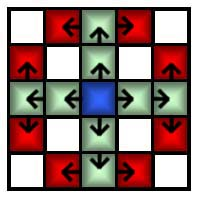

| Problem A: | Aztec Knights |
|
Time Limit: 6 seconds Memory Limit: 32 MB |
|
Aztecs warriors are great fighters. It is obvious that aztecs have their own version of knight. It's their own version because their knights moves in a different way than the usual knights. You know that usual knights always move horizontally or vertically but aztec knights always move diagonally. Yes, that's the difference. Look at the following two pictures to see the difference. Don't get confused with the path shown in the picture. We count one knight move when the knight moves from the blue square to any one of the red squares.
|  | |
| Fig 1: Usual knight's moves | Fig 2: Aztec knight's moves |
An Aztec knight does a weird thing when it moves from one place to another. It doesn't stop at a place if it doesn't reach that place in prime number of moves. Given the initial and final position of the knight, is it possible to determine whether the knight can reach the destination and stop there or not? The knight doesn't come back to a place which it already visited.
There can be several set of inputs. A set starts with a pair of integers m and n (4<=m,n<=15). m and n are the number of rows and columns of the terrain respectively. Next, there will be srow and scol indicating the current position of the knight. Finally, two more integers drow and dcol indicating the destination of the knight. The upper left most corner of the terrain is denoted as (0,0). The Input ends at EOF.
Print "CASE# X: " before every set of output where X is the case number. Print a line of the format "The knight takes l prime moves." where l is the minimum prime number of moves required to reach the destination starting from the initial position. Print "The knight takes l composite move(s)." if it is not possible to reach in prime number of moves but possible in composite number of moves and l is the minimum number of composite move required. Print "Destination is not reachable." if destination is unreachable.
5 5 0 0 3 4 5 5 0 0 4 4 5 5 0 0 0 0
CASE# 1: Destination is not reachable. CASE# 2: The knight takes 2 prime moves. CASE# 3: The knight takes 0 composite move(s).
Problem setter: Shah Arif Iqbal (Sohel)
Solution author: Monirul Hasan (Tomal)
There are two tragedies in life. One is not to get your heart's desire. The other is to get it.
-- George Bernard Shaw